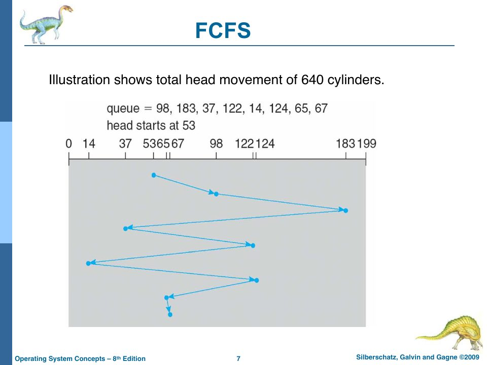

Disk Systems and Disk Scheduling
Slides: Chapter 12, “Disk Systems,” pp. 786–808.
The last storage chapter goes below the file system to the device itself. rObSen’s “disk” has no moving parts, so most of this chapter is theory. But the theory explains why rObSen’s disk is organized into tracks and sectors at all, and it ends with a sketch of how rObSen could simulate the physics if you wanted the scheduling algorithms to matter.
How a hard disk works
A hard disk is a stack of platters spinning at 7,200 to 15,000 RPM, with a head for each surface on an arm that moves all the heads together (slides pp. 787–788). Each surface is divided into concentric tracks; the set of tracks at one arm position, across all surfaces, is a cylinder; each track is divided into sectors.
Reading a sector costs:
- seek time: moving the arm to the right cylinder;
- rotational latency: waiting for the sector to spin under the head;
- transfer time: actually reading the bits.
Seek time dominates, and it’s roughly proportional to the distance the arm moves. Hence the whole subject of disk scheduling: “Minimize seek time. Seek time ≈ seek distance” (slide p. 790).
The OS sees the disk as “a large 1-dimensional array of logical blocks,” mapped onto sectors starting at the outermost cylinder and working inward (slide p. 789). rObSen’s toIndex(track, sector, block) is that mapping in reverse: it flattens a three-dimensional address into a position in a one-dimensional array.
Disk scheduling
When several I/O requests are pending, the order in which the disk serves them determines how far the arm travels. The slides use the textbook’s standard example: a disk with cylinders 0–199, the head at cylinder 53, and a queue of requests for cylinders
98, 183, 37, 122, 14, 124, 65, 67
FCFS serves them in arrival order. Fair, simple, and the arm swings wildly: 640 cylinders.

SSTF (shortest seek time first) always serves the closest pending request. It’s SJF for disks (slide p. 793), with SJF’s virtue (236 cylinders) and SJF’s vice: a request far from a busy region can starve.
SCAN, the elevator algorithm, sweeps the arm from one end of the disk to the other, serving requests along the way, then reverses (p. 795). C-SCAN (circular SCAN) sweeps in one direction only, then jumps back to the start without serving anything on the return trip, which gives more uniform waiting times, because a request just behind the head doesn’t have to wait for two full sweeps (p. 797). LOOK and C-LOOK are the same, except the arm turns around at the last request in each direction instead of travelling all the way to the edge (p. 799).
By code
src/code/sims/disk.ts implements each policy as a function from the queue to a visiting order (a function type, Chapter 8a):
type Order = (queue: number[], head: number, maxCyl: number) => number[]; // returns visit order (stops)
const fcfs: Order = (q) => [...q];
const sstf: Order = (q, head) => {
const pending = [...q];
const path: number[] = [];
let at = head;
while (pending.length) {
pending.sort((a, b) => Math.abs(a - at) - Math.abs(b - at));
at = pending.shift()!;
path.push(at);
}
return path;
};
// SCAN toward 0 first: sweep down to cylinder 0, then reverse.
const scanDown: Order = (q, head) => {
const down = q.filter((c) => c <= head).sort((a, b) => b - a);
const up = q.filter((c) => c > head).sort((a, b) => a - b);
return [...down, 0, ...up];
};
and sums the distances:
$ tsc --target es2022 disk.ts && node disk.js
FCFS 640 cylinders 53 → 98 → 183 → 37 → 122 → 14 → 124 → 65 → 67
SSTF 236 cylinders 53 → 65 → 67 → 37 → 14 → 98 → 122 → 124 → 183
SCAN (down) 236 cylinders 53 → 37 → 14 → 0 → 65 → 67 → 98 → 122 → 124 → 183
LOOK (down) 208 cylinders 53 → 37 → 14 → 65 → 67 → 98 → 122 → 124 → 183
C-SCAN (up) 382 cylinders 53 → 65 → 67 → 98 → 122 → 124 → 183 → 199 → 0 → 14 → 37
C-LOOK (up) 322 cylinders 53 → 65 → 67 → 98 → 122 → 124 → 183 → 14 → 37
FCFS and SSTF match the slides. Notice SCAN: the slide says “Illustration shows total head movement of 208 cylinders.” But a true SCAN moving toward 0 goes 53 → 0 (53 cylinders), then 0 → 183 (183 more), for 236. The 208 figure is what you get if the arm reverses at cylinder 14, the last request, instead of at 0, which is LOOK. The slide’s number fits LOOK, not SCAN as described. On an exam, show your path and your arithmetic, and say which convention you’re using.
Choosing
“SSTF is common and has a natural appeal. SCAN and C-SCAN perform better for systems that place a heavy load on the disk… Either SSTF or LOOK is a reasonable choice for the default algorithm,” and the scheduler “should be written as a separate module of the operating system, allowing it to be replaced” (slide p. 801). That last point is the policy/mechanism separation from Chapter 2 again, and the strategy pattern from Chapter 20a.
(Modern SSDs have no arm and no rotation, so seek-distance scheduling buys nothing; their schedulers focus on fairness, merging requests, and parallelism across flash channels.)
Disk management
Before a disk can hold files it needs low-level (physical) formatting, which divides it into sectors the controller can read, then partitioning into groups of cylinders, then logical formatting (“making a file system”). The boot block holds the bootstrap loader. Bad blocks are handled by sector sparing: the controller quietly remaps them to spares (slide p. 802). Defragmentation (pp. 803–805) rearranges blocks so that each file’s blocks are adjacent, which matters on spinning disks because it turns many seeks into one. rObSen’s chkdsk defragmenter (Chapter 15) is the same idea in miniature.
Swap-space management
“Virtual memory uses disk space as an extension of main memory” (slide p. 807). Swap space can be carved out of the regular file system (a swap file: easy to resize, but every access goes through file-system code) or live in a separate raw partition (faster, fixed size). 4.3BSD allocated swap space when a process started; Solaris 2 allocates it only when a page is actually forced out of memory. Chapter 17 looks at where rObSen puts its swap space, and finds that it’s neither.
What it would take to make scheduling matter in rObSen
rObSen’s disk reads are instantaneous: sessionStorage.getItem takes the same time for any block. So disk scheduling can’t improve anything, and there’s no request queue to schedule. To make the course’s algorithms meaningful, you’d simulate the physics:
- Give the disk driver an arm position (the current track) and a request queue.
- Make operations asynchronous: a request is queued, and the caller (a process, or the swapper) moves to a waiting state.
- On each clock tick, move the arm one track toward the next request chosen by the scheduling policy (FCFS, SSTF, LOOK, …). When it arrives, perform the read or write and raise
DISK_IRQ, the IRQ numberglobals.tsalready reserves. - The disk ISR wakes the waiting process (moves it back to the ready queue).
That would add the waiting state that the course’s process-state diagram leaves out (Chapter 9), give the kernel a second interrupt source, and make swapping cost something, which is the honest way to motivate everything in Chapter 18.
Check yourself
- Compute SSTF’s path by hand from 53. At which step is there a tie, if any?
- Why does C-SCAN give more uniform waiting times than SCAN?
- In the example, which request waits longest under SSTF?
Answers
- 53 → 65 (12) → 67 (2) → 37 (30) → 14 (23) → 98 (84) → 122 (24) → 124 (2) → 183 (59) = 236. No exact ties: at 67, the nearest are 37 (30 away) and 98 (31 away).
- With SCAN, a request that arrives just behind the head as it reverses waits a little, but a request at the far end that just missed the head waits for nearly two full sweeps; cylinders in the middle get served twice as often as those at the edges. C-SCAN serves every cylinder once per sweep, in the same direction, so the maximum wait is about the same everywhere.
- 183: it’s served last, after the arm has gone down to 14 and back up.